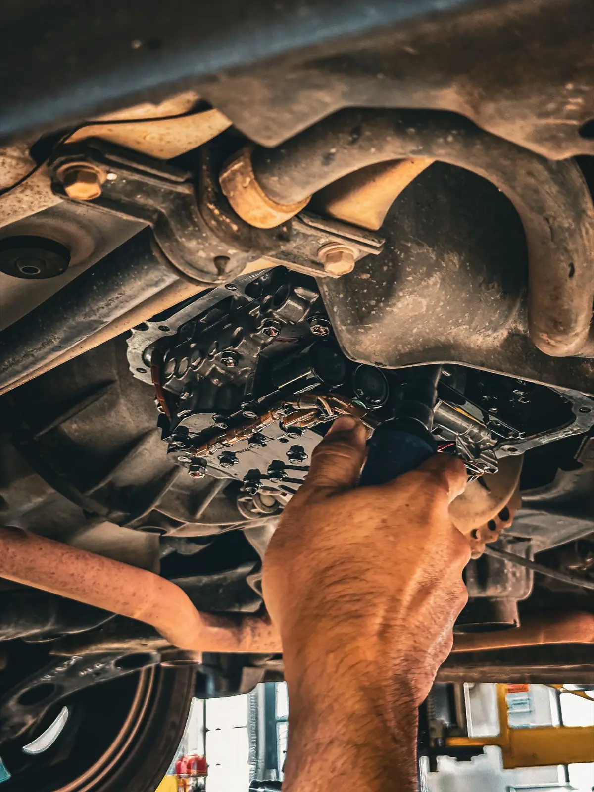

Since 1976
Jim Lyons started the business in 1976. Today it's owned by Kirby and Sherry Baumung, still locally owned and operated, still serving Brandon and the communities around it.

Transmissions are still the heart of the shop. We also do complete auto repair on every make and model, we're a Hercules tire dealer, and we work out of a newly expanded 9-bay facility.
Transmission work starts with a proper diagnosis on up-to-date equipment. From there we repair, rebuild or replace it, and our transmissions come with a nationwide warranty.
Kirby and Blair Robertson are both ATRA certified rebuilders; Blair is our head rebuilder and has been with us since October 1982. The rest of the floor is Journeyman technicians, two of whom earned their papers here.
Meet the staff
Owned by Kirby Baumung (Owner/Manager, ATRA certified transmission rebuilder) and Sherry Baumung (Owner, Office Manager).
Jim LyonsFounder, now Technical Assistant
Founded the business in 1976.
Blair RobertsonService Manager, ATRA certified rebuilder
Head rebuilder; manages the technical rebuilding team and can do most or all jobs in the shop. A trusted employee since October 1982.
Billy DesmaraisJourneyman Automotive Technician
Shop supervisor, with us since July 2007. Achieved his Journeyman papers while working here, in June 2011.
Jeremy BissonJourneyman Automotive Technician
Started in October 2012, completed his 4th level apprenticeship and became a Journeyman in January 2014.
Eddie FortuneJourneyman Automotive Technician
With us since September 2018, after 8 years at a Chev/GMC dealership. Journeyman since 2014.
Liam MacCharlesJourneyman Automotive Technician
Joined in July 2019 with 7 years on front ends, suspensions, brakes, tires, alignments and general repair.
Our ATRA pledge
As a member of the Automatic Transmission Rebuilders Association, Lyons Transmission Centre pledges:
- To diagnose transmission problems in an expert and honest manner, and to say a transmission must come out of a vehicle only when that is the case.
- To give prompt and courteous in-car diagnosis, free of charge, to customers of other ATRA member shops.
- To act with integrity, speak responsibly, and follow the Golden Rule with the motoring public and with our competitors.
- To keep the highest standards for parts and workmanship at our shop.
- To keep training and retraining ourselves and our employees as the industry changes.
- To have ourselves and our employees tested and certified on a continuing basis.
- That any transmission we call "rebuilt" has been re-processed to the Association's Rebuilding Standards.
Affiliations
The associations and suppliers listed on our affiliations page.
- ATRA
- The Automatic Transmission Rebuilders Association, an international trade association with members across the US and Canada, and a Code of Ethics every member follows.
- NAPA AutoCare
- A quality standard that independent repair shops are invited to join based on their reputation, integrity and qualifications.
- Brandon Chamber of Commerce
- Incorporated on May 14, 1883, and the voice of Brandon business ever since.
- CFIB
- The Canadian Federation of Independent Business.
- iATN
- The International Automotive Technicians' Network, where technicians share technical knowledge.
- TRNW
- Transmission Rebuilders Network Worldwide, for rebuilding tips, diagnostic help and parts locating.
- Sonnax, TransGo, Transtar
- Transmission parts and engineering suppliers to the repair industry.
Bring it to Lyndale Drive
2127 Lyndale Drive, 18th Street South, Brandon. Monday to Friday, 8 am to 5 pm, closed 12 to 1 for lunch.